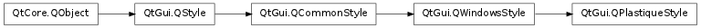

QPlastiqueStyle ¶

Detailed Description ¶
The PySide.QtGui.QPlastiqueStyle class provides a widget style similar to the Plastik style available in KDE.
The Plastique style provides a default look and feel for widgets on X11 that closely resembles the Plastik style, introduced by Sandro Giessl in KDE 3.2.

See also
QWindowsXPStyle QMacStyle PySide.QtGui.QWindowsStyle PySide.QtGui.QCDEStyle PySide.QtGui.QMotifStyle
- class PySide.QtGui. QPlastiqueStyle ¶
-
Constructs a PySide.QtGui.QPlastiqueStyle object.